ImageMagick v6 Examples --
 Convolution of Images
Convolution of Images
- Index
 ImageMagick Examples Preface and Index
ImageMagick Examples Preface and Index
 Introduction to Convolution
Introduction to Convolution
- Convolve
- Convolve Kernel Scaling
- Kernel Normalization (Automatic Scaling)
- Zero-Summing Normalization
- Blending Kernel with the Identity Kernel
- Output result Bias Control
Blurring Images (Low-Pass Filtering)
- Blurring Kernels
- Gaussian vs Blur Kernels
- Softened Blurring (blending with original image)
- 'Un-sharpen' Images using Blurs (subtracting from the original image)
Edge Detection Convolutions (High-Pass Filtering)
- Edge Detection Kernels
- Sharpening Images with Edge Detection (enhancing the edges of the original image)
Directional Convolutions (Slopes, Compass Filtering)
Correlate
- Convolve vs Correlate (asymmetrical kernel effects)
- Correlation and Shape Searching
- Correlate vs HitAndMiss
Neighbour Counting
Introduction to Convolution
The 'Convolve' and the closely related 'Correlate'
methods, are is many ways very similar to Morphology. In fact they work in almost the exactly the same way,
matching up a neighbourhood 'kernel' at each location, making them a just
another special 'method' of morphology.
In fact, they also use much of the same code and even the same kernel
definitions that was defined in Basic
Kernels and User Defined Kernels. For
more specific kernels designed for use by this operator, (and there are many),
I refer you to Blurring Kernels, and Edge Detection Kernels. The most important
kernel being the 'Gaussian' kernel.
However, convolution is much older than morphology, and it generates more
grey-scale gradient effects, rather than the binary shape studying effects
that morphology typically generates. This is why it is often regarded as
a very different or separate operation to morphology and one that is more
central to image processing.
Basically a convolution or correlation performs a 'weighted average' of all
the pixels in the neighbourhood specified. That is, it multiplies the value of
each nearby pixel by the amount given in the kernel, then adds all those
values together to produce the final result.
As such, each pixel in the final image will generally contain at least a small
part of all the other pixels locally surrounding it in the source image.
Looking at it another way, the color of each pixel in the image will be either
added to (blurred) or subtracted from (sharpen/edge detection) the colors of
all its near by neighbours, as defined by then kernel used.
Both 'convolve' and 'correlate' are the same operation, except in a very minor
but important way, and for the examples and controls that we will now look,
you can treat them as being basically the same thing. Later (See Convolution vs Correlation) we will examine
exactly how the two operators really differ and why they differ in such
a minor way. But in most circumstances they are the same method.
Convolve
(
 )
)
As was mentioned above the 'Convolve' method works by weighting
each of the pixels in the local neighbourhood, according to the floating point
values in the kernel. The weighted values are then simply added together to
produce the new replacement pixel in the resulting image.
For example lets convolve a single pixel, using a very small User Defined convolution kernel. I also set
the special Show Kernel Setting, so
you can see the details of the kernel being defined and used (displayed images
have been enlarged).
|
| 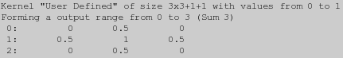 |
![[IM Output]](kernel_spread.gif)
0.5'
value of the kernel, and the resulting 'half-bright' pixel is added to the
resulting image.
Simularly when the kernel's origin is position exactly over the original
pixel, it will get a value of '1.0' reproducing the original
pixel with no other values (black) in the neighbourhood around it adding any
component to the result.
Note that any kernel value of '0.0' will take no part in the
final calculation. Zero values are effectively not part of the
'neighbourhood', just as any 'Nan' value in morphology kernels
take no part. As such this kernel consists of a 5 element neighbourhood.
In many ways a 'Convolve' method is very
similar to a morphological 'Dilate' method, however 'Dilate' only treats the kernel as a type of bitmap mask, locating
the largest value within the neighbourhood. On the other hand 'Convolve' is a weighted sum of all the values in
the neighbourhood, as such the value of each kernel element plays a part in
the overall result.
The syntax of a convolution operation is...
-morphology Convolve {convolution_kernel}
-convolve {convolution_kernel}
Before IM v6.5.9 the older "-convolve" did not understand morphology kernel definitions.
It would only accept the 'old style' of user defined kernels, consisting of
just a string of comma separated values to produce to some odd-sized square
kernel. It will now accept the 'new' style' convolution kernels defintions.
However it is still restricted to 'odd sized' square kernels. And will
remain that way until it starts to make use of the new 'morphology'
convolution method.
|
The older "-convolve" operator is not exactly the same as the newer
morphology 'Convolve' method. The
following is a list of how the two operations differ...
Convolve'
method.
|
Convolve' actually does works, I recommend you also have a look at
EECE \ CS 253 Image Processing, Lecture 7, Spatial Convolution.
The Wikipedia, Convolve
artical has some nice 1-D animations of the convolution process.
Convolve Kernel Scaling
The above example works well for a mostly black image such as a single pixel, but if you were to apply this to a real image, you will have a problem...
|
![[IM Output]](../images/face.png)
0.5' on the sides, plus a full copy of the original pixel. That
is the addition of all the values in the kernel is 3, making the resulting
image three times as bright!
If you go back and look at the 'showkernel' output above, you will see that it
listed this kernel as having a "convolution output range from 0 to 3". Which
shows that this kernel will in general brighten an image 3 times.
To fix this you would want to divide all the values in the kernel by 3. That
is a value of '0.5' should really have been about
'0.1667' while the central value of '1.0' should
have been '0.3333'. This is a process known as 'Kernel
Normalization'.
For example here is manually 'normalized' result, and the kernel definition...
|
![[IM Text]](kernel_spread_norm.txt.gif)
|
![[IM Output]](face_spread_norm.png)
The 'kernel image' that is shown in the above (generated using a special Kernel 2 Image Script) also shows
the resulting normalized kernel. As you can see the kernel itself is now
very dark, as all its values are also dark, though they all add up to
a value of '1.0'.
From this point on all convolution kernel images shown will always be
adjusted so the maximum value is set to white, otherwise all you will
generally see is a dark, and basically useless, 'Kernel Image'.
|
-define convolve:scale={kernel_scale}' allows you to specify a global scaling factor for
the kernel, and thus adjust the brightness of the overall result.
|
Kernel Normalization (automatic scaling)
Rather then working out the scaling factor (as above), you can simply ask the IM to work out this 'normalize scaling factor' internally by giving it the special '!' normalization flag.
|
The '!' character is also sometimes used for special purposes
by various UNIX command line shells. So you may have to escape the
character using a backslash, even in quotes. Caution is advised.
|
-convolve" variant will automatically do this normalization.
You can have IM normalize the kernel, then scale it further again by a given
amount to adjust its output range. To make this even easier you can specify
the scaling factor as a percentage.
For example here I normalize the kernel but then re-scale the values to 50%
the calculated size, so as to produce a darker result.
|
!' is actually equivelent to using
'1!' or even '100%!'. You can even use a negative
scaling factor if you want to flip the positive and negative values within the
kernel. For an example of this see 'Un-Sharpening'
Images using Blurs.
If the kernel has been normalized in this way the Show Kernel output will tell you that it
is normalized.
How Normalization Works
The actual way 'Kernel Normalization' works is that all the kernel values are added together (including any negative values which is also posible). If the result is non-zero, then scale all the values so that their combined value adds up to a value of one ('1.0').
Note that, if you have negative values, this could actually create a kernel
with a value larger than one, typically at the origin. It specifically happens
with Un-Sharp kernels. The important point,
however, is that the kernel as a whole adds to '1.0', so that the
final image is not made darker or lighter by the Convolution operation.
If the result of the addition is Zero ('0.0'), then the kernel is
assumed to be a special Zero-Summing Kernel. In
that case the kernel is scaled to make all positive values equal to
'1.0', and by the same token, all negative values will then add
up to '-1.0'. These kernels are especially prevelent with
Edge Detection techniques.
The Show Kernel output will also
specify that it is zero-summing, if the kernel is in this form, even if not
actually a normalized zero-summing kernel, though that will also be easilly
seen by the other numbers displayed.
Most mathematically determined kernels are pre-normalized. This includes
the mathematically derived kernels:
'Unity',
'Gaussian',
'LoG',
'DoG',
'Blur',
'Comet'.
Discrete Constant Kernels, however are are not pre-normalized, so you will
have to do this using the Kernel Normalization
Setting (above). This includes the kernels:
'Laplacian',
'Sobel',
'Roberts',
'Prewitt',
'Compass',
'Kirsch',
'FreiChen'.
Note that the 'FreiChen' kernel
has sub-types that are specially pre-weighted for more specific purposes.
The FreiChen kernels should not be normalized, but used as is.
Zero-Summing Normalization
Not all convolution kernels use only positive values. You can also get kernels that use a mix of positive and negative values and often the values of these kernels are meant to add up to zero to produce a Zero-Summing Kernels. Such kernels are very important to more advanced Image Convolutions, as they provide techniques of Edge Detection and Sharpening Images. As I mentioned in the last section, the usual normalization flag '!' will work with such kernels. But sometimes due to special
situations you want to ensure that the kernel does remain 'zero-summing'.
The special '^' normalization method just provides a way to
ensure the kernel is 'zero-summing' in situations such as...
- If the user's kernel definition is not precise enough to ensure
zero-summing. For example you cannot specify '
1/3' or any other fractional factor of 3 as an exact floating point decimal number. - The mathematical curve gets 'clipped' by the kernels size (radius) so it
may no longer be zero summing. For example, this occurs in a '
LoG' or 'DoG' kernels, which are based on infinite response curves. IM actually uses this special normalization internally on these kernels for this very reason. - Ensure that a Correlation 'shape mask' is zero summing, so that in the search, IM can look for both positive and negative matches, equally. See Correlation Shape Searching below.
-1.0' and all the positive values to
scaled add to '+1.0'. The result is that the kernel will be
guranteeed as a whole, to add up to zero.
Note that if you use this normalization method for an all-positive kernel such
as 'Gaussian' you will still get a properly normalized kernel. As such this
form of normalization can still be used with Blurring Kernels.
However it should not be used to normalize directly defined Sharpening or even Un-Sharpening kernels, as this can contain negative values, but are
required to sum to a value of one (using the normal normalization method).
Blending Kernel with the Identity Kernel
The full syntax of the Kernel Scaling Setting is either...
-define convolve:scale='{kernel_scale}[!^]
[,{origin_addition}] [%]'
-set option:convolve:scale '{kernel_scale}[!^]
[,{origin_addition}] [%%]'
-set".
The optional normalization flags '!' or '^" will be
applied to the user defined or built in kernel first (if requested).
After that, the kernel will scaled by the 'kernel_scale' factor either
increasing or decreasing the effective 'power' of the convolution on the
results. Default scaling factor is '1.0'.
Lastly the 'origin' value of the kernel will have the number after a comma
added to it. Default 'origin_addition' is '0.0'.
This last step effectively 'adds' a Unity Kernel of the
given 'scaling' to the previously generated normalized and scaled kernel.
This generates kernels that can...
- Soften the effects of a Blurring Kernel.
- Convert a Blurring Kernel into one that can be used to directly to Un-Sharpen an Image.
- It can also allow you to magick Edge Detection Kernel into a Image Sharpening Kernel.
%') flag, that percentage will
be applied to BOTH the 'kernel_scale' factor and the
'origin_addition'. This can make makes the scale easier to read and
understand when fractions are involved.
Example use of kernel scaling define...
-define convolve:scale='!50%,100%' -morphology Convolve Laplacian:2 |
Laplacian:2' kernel...
| 0 | -1 | 0 |
|---|---|---|
| -1 | 4 | -1 |
| 0 | -1 | 0 |
| 0 | -0.25 | 0 |
|---|---|---|
| -0.25 | 1 | -0.25 |
| 0 | -0.25 | 0 |
| 0 | -0.125 | 0 |
|---|---|---|
| -0.125 | 0.5 | -0.125 |
| 0 | -0.125 | 0 |
| 0 | -0.125 | 0 |
|---|---|---|
| -0.125 | 1.5 | -0.125 |
| 0 | -0.125 | 0 |
Laplacian:2' as a sharpening kernel, but with only
a '50% sharpening power.
Remember any '%' flag given anywhere in the scale setting, will
make both values percentages. If not present both values are just simple
direct multipliers. For example all these scaling options are equivalent
The same goes for the two normalization flags. They can appear anywhere in the convolve scaling setting, but they will always be applied first before any other scaling takes place.
50,100% 50%,100 %50,100 .5,1 0.5,1.0
Output result Bias Control
When you are dealing with a kernel that contains negative values, some pixels in the resulting image should be assigned a negative value. This is especially the case with Zero-Summing Kernels (see below). Unfortunately, unless you have a specially built HDRI Version of ImageMagick, to preserve the negative values that were generated, any negative result will be clipped to zero (black). You will only get thge positive results from the convolution. It just can not be stored in a normal image format, leaving you with half the result. You could build HDRI Version of ImageMagick to preserve the negative values that were generated, and then extract the information you want. Alternately, you can negate the kernel by using a negative scaling factor. For example using...
-define convolve:scale='-1'
-bias" you can still preserve both positive and negative results.
The settings to use for non-HDRI version of IM is...
-define convolve:scale=50%\! -bias 50%
|
-1.0' and white will mean '+1.0'.
One example of doing this is shown in the Correlate Shape Search examples below.
Blurring Images (low-pass filtering)
Another section of IM examples, specifically Blurring, and Sharpening Images, actually deals with practical aspects of this subject. Here we look at more specific details. First however, we will describe the basic kernels and how you can use them directly without modification. Later we will look at ways of modifying the bluring to generate other effects.Blurring Kernels
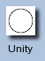Unity
This is a special kernel that actually does nothing. Only one kernel element is specified, and as a result each pixel is replace by itself without change. For example here is a no-op Convolution... As of IM v 6.6.9-4, the kernel can take a single argument, as a kernel specific scale argument. This allows you to use it to multiply the values of an image, such as make an image brighter or darker.![[IM Output]](face_unity.png)
|
![[IM Output]](face_dimmed.png)
|
Disk:0.5', which also allows you to
specify an extra scaling argument as part of the kernels generation. (EG:
'Disk:0.5,0.5' for the last example).
A similar kernel (for Convolution) can also be
generated by the a 'Gaussian' kernel
generator with a 'sigma' of '0.0'. However that can only
produce a small 3x3 kernel, consisting of a central '1.0' value
surrounding by 8 '0.0' values.
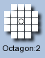
Mean or Average Filtering using Shape Kernels
While most convolution kernels defined below generally involve the use of a Gaussian Curve in some way, you can still use one of the previous Morphology Shape Kernels to simply average the pixels over a given (large) area. Of course you will need to Normalize the kernel so as to actually generate an average, rather than just a sum of the neighbourhood. For example, here I use a smaller 'Octagon' shaped kernel, to average all the pixel values found within
a circlular areas surrounding each pixel.
The result is that the value of each pixel is spread out equally over all 25
pixels in the defined neighbourhood. That is, it is equivelent to a 'mean' or
'averaging' filter over the given shape.
If you want to exclude the original pixel from that average, only using the
surrounding pixels, then you can use a '![[IM Output]](face_mean.png)
Ring' kernel (supplying only one radii).
The other Shape Kernels can also be used in the
same way to, say, average the pixel values over a 'Diamond', 'Square' or large 'Disk' shape and to whatever size you
want.
However while a constant averaging over an shaped area does blur images, it
has a tendency to produce unusual effects (specifically Aliasing Artefacts) in the resulting image.
More specifically, by using a 'flat' averaging kernel tends to magick sharp
edges into a thicker linear slope with sudden change in the slope at the
thickened edges
The thickness of the result is kernel 'radius*2-1'. How different
edge angles effect the slope thickness and linearity of the slope depends on
the shape of the 'flat' or averaging kernel.
magick -size 80x80 xc: -draw 'polygon 15,15 15,65 60,15' shape.png
magick shape.png \
-define convolve:scale=! -morphology Convolve Square:5 \
shape_mean_square.png
magick shape.png \
-define convolve:scale=! -morphology Convolve Disk:5 \
shape_mean_disk.png
|
![[IM Output]](shape.png)
![[IM Output]](shape_mean_square.png)
![[IM Output]](shape_mean_disk.png)
-blur 5x65535. This was
commonly used by Fred Wienhaus in his scripts before morphology was available.
![[IM Output]](kernel_gaussian.gif)
Gaussian Kernel (2d gaussian blur)
As you may have gathered, the 'Gaussian' kernel is the most
commonly used kernel to Convolve an image. This is
the mathematical ideal kernel for blurring effects.
Here for example is the Show Kernel
of a small 'Gaussian' kernel (they can get very large very
quickly)...
|
| 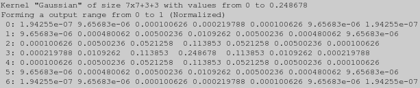 |
:0' Iteration Count, so
it does nothing. Similarly I junk the resulting image output using the special
'null:' file format.
As you can see by the convolution output range, a 'Gaussian'
kernel has already been normalized (scaled) for you. However you will also
notice that it is still quite a large kernel, filled with small fractional
values. If you look closer you will find the largest value (2.48678, which is
also listed on the first line) is in the center, with the smallest values
toward the edges and the corners (a value of about .000000194).
Here is typical Gaussian blur using a convolution...
magick face.png -morphology Convolve Gaussian:0x2 face_gaussian.png |
![[IM Output]](face_gaussian.png)
Gaussian:[{radius}]x{sigma}
|
-gaussian-blur" operator,
which actually performs a Convolution using this
kernel.
The first number, like most Morphology
Kernels, is the 'radius' or size of the kernel. This is just an
integer, with a minimum value of 1, making the smallest posible kernel 3x3
elements in size. The best idea is to always specify zero, which allows
ImageMagick to calculate an appropriate radius for the 'sigma' value
provided.
The second more important argument is 'sigma' which defines how blurred
or 'spread out' each pixel should become. The larger the value the more
blurry an image will become. It is a floating-point value. The sigma
value MUST be provided.
If a sigma value of '0.0' is given you will end up with a fairly
useless 'Unity' kernel (of the given
radius, or a radius of 1, so producing a 3x3 kernel of a single
'1.0' value surrounded by '0.0' values.). As you saw
above, convolving with any type of 'Unity'
kernel does nothing to the image!
If you do specify a 'radius' it is generally a good idea to make it at
lest twice as big as the 'sigma', IM usually calculates a radius that is
approximately 3 times as big (actually the largest radius that will provide
meaningful results), though it depends on the Compile-time Quality of your specific IM installation.
For more information on the effect of the 'Gaussian' kernel
arguments, and on blurring images in general, see... Blurring Images.
![[IM Output]](kernel_blur.gif)
Blur Kernel (1d gaussian blur)
The 'Blur' kernel is very similar to the Gaussian Kernel, and even takes the same arguments (see below). But where
gaussian is a 2-dimensional curve, the 'Blur' kernel produces
a 1-dimensional curve. That is to say it generates a long thin single row of
values.
Here is a Show Kernel output of
a small 'Blur' kernel.
|
![[IM Output]](kernel_blur_profile.gif)
| ||
|
Blur'
kernel. It was created using the Kernel Image script "kernel2image", and that image then graphed using the "im_profile" script. It clearly shows
the 'Gaussian Bell Curve' that this kernel represents.
Here is an example of using this kernel to horizontally blur an image.
|
![[IM Output]](face_blur.png)
|
Gaussian' but with an extra optional rotation angle.
Blur:[{radius}]x{sigma}[,{angle}]
|
Unity' kernel.
The 'angle' allows you rotate the kernel by 90 degrees allowing you to
blur an image vertically.
|
Gaussian' kernel produces. See Gaussian vs Blur Kernels below for details of how this is done.
![[IM Output]](kernel_comet.gif)
Comet Kernel (half 1d gaussian blur)
The 'Comet' kernel is almost exactly the same as a 'Blur' kernel, but is actually only a half a blur
kernel.
|
| 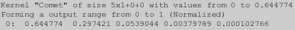 |
| 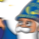 |
|
![[IM Output]](face_comet_vert.png)
|
Gaussian vs Blur Kernels
As mentioned the 'Gaussian' and
'Blur' kernels are very closely related, and
can in fact to the same job. Both are representations of the Gaussian Curve, the first being a 2-dimentional
representation, while the other is a 1-dimentional representation.
For example here is repeat of the "-gaussian-blur 0x2" which is
equivalent to "-morphology Convolve Gaussian:0x2" operation.
| 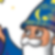 |
|
![[IM Output]](face_blur_x2.png)
|
|
>' to do a list of 90 degree rotations (two kernels
in this case). For example...
magick face.png -morphology Convolve 'Blur:0x2>' face_blur_x2.png |
All the above examples are equivalent to each other, and is how the "-blur" operator works.
|
![[IM Output]](face_blurred.png)
|
-blur" and "-gaussian-blur" operators.
In the latter one single large 2-dimensional kernel is used, while the former
uses two small 1-dimensional kernels are used.
In terms of speed however the "-blur" operator is usually an order of magnitude faster, as it
uses two much smaller kernels, rather than one very large one. The larger the
blurring argument (the size of the sigma argument) the bigger kernels
become, and the larger the difference in speed between the two operations. As
such the "-blur" operator
is generally the recommended one to use.
The only difference in results between the two operators are small quantum
rounding effects (unless you are using HDRI) and edge effects (depending on Virtual Pixel Setting). Both of these being
caused by a loss of information generated due to saving an intermediate image
between the two separate passes of the 'blur' convolutions. This difference
is typically so small as to be invisible and of no concern to any practical
usage.
Softened Blurring (blending with original image)
You can soften the impact of any sort of blur by blending it with some of the original image. Especially when applying a very strong blur. For example...
magick face.png -morphology Convolve Gaussian:0x3 face_strong_blur.png
magick face.png face_strong_blur.png \
-compose Blend -define compose:args=60,40% -magick composite \
face_soft_blur.png
|
![[IM Output]](face_strong_blur.png)
Blend'
composition method, to mix '60%' of the blurred image
(composition source image) with '40%' of the original image
(composition destination image) to give a 'soft blur' effect on the final
image.
However you can do the same thing directly by Blending the Kernel with the Identity Kernel, using the same ratio.
|
60%') scales the given kernel so as to reduce its effect on the
output, while the second number ('40%') adds enough of the
'Unity' (or 'Identity') kernel to prevent
the result from becoming darker.
The important point is that for Blurring
Kernels, the two numbers add up to '100%', just as you would
for Composite Blending.
You can also use the faster 2-pass blurring, but in this case we can not
incorperate a 'Blend' into the kernel directly, as the two separate
convolutions will not 'separate' cleanly. As such we will need to again do
the Blend Composition afterwards.
|
100' will give the blurred image, while '0'
will give the original image.
Remember the "-blur"
operator is exactly equivelent to using the faster 2-pass
Bluring Kernels.
|
'Un-sharpen' Images using Blurs (subtracting from the original image)
By taking this blending of kernels further, so that you start to use a negative scaling, you can subtract the blurring effects from the original image. The result is a technique called 'unsharp'. See Unsharp, Wikipedia for how it came to get such an unfortunate name.
|
100%', exactly as it did above. You
can also do this with Composite Blending
as well.
The above example is actually exactly how the mis-named "-sharpen" operator works but
with only the 'sigma' blurring control. However no other control of the
operation is provided. The blending is exactly as given above.
You can use faster 2-pass, 1-dimensional Blurring
Kernels, but again you will need to do the blending operation as
a separate step.
|
![[IM Output]](face_unsharp_fast.png)
|
|
-unsharp"
operator provides provides another type of control. Specifically,
a difference threshold, so that the sharpening only applied when the given
difference is larger, such as near an actual edge within the image. That
threshold can be use to prevent the 'sharpening' small small defects, like
wrinkles, or camera noise.
Unsharpening an image is typically used with very small blurs (on the order of
sigma=0.75) after resizing or distorting image, to improve the final result.
See Sharpen Resized Images for some
examples of this.
The alternative to using an 'unsharp' technique for image sharpening is to
actually locate image edges and use them to sharpen images. See Sharpening Images with Edge Detection below for
details. However it is generally regarded as being slower, though not really
by very much.
Edge Detection Convolutions (high-pass filtering)
Edge Detection is another area in which convolutions are heavilly used. The task here is to highlight or enhance the edges of an image in various ways. This can be to either locate an edge as accuratelly as posible or to determine the angle or direction of slope of each of the edges. However the job can be made a lot more difficult by the presence of noise in the image, such as that produced by scanners, digital cameras, or even just caused by the lossy compression of the JPEG image file format. In general, however, larger kernels handle noise better, but at a loss of localizing the edge properly, while smaller kernels produce sharp edge locating results but with more spurious results caused by noise in the image. There are a lot of small, well-known kernels, that have been developed and studied for edge detection. Most of these are 'named' after the mathematician which studied the mathematics or the developed that specific kernel type. As such, you have kernels such as 'Laplacian', 'Sobel' and
'Prewitt'.
These 'named' kernels are generally very small and are defined using whole
numbers, so they can be built into specifically designed optimized software
and hardware for speed. That is, they are said to be 'discrete' kernels.
Because of that, you will need to either Scale or
Normalize the kernel as part of their use.
Edge detection also has the side effect of providing ways of sharpening the
edges of an image.
Zero-Summing Kernels
All the edge detection kernels have one feature in common. They are all zero-summing. That means they contain negative values, but with all the values in the kernel adding up to zero. For a smooth flat color image, a Convolution using such a kernel will produce a 'zero' or black image. However for any other image, you will have results that contain both negatative and positive values. For example here I apply a discrete 'Sobel'
edge detector on an image containing some basic shapes...
magick -size 80x80 xc:black \
-fill white -draw 'rectangle 15,15 65,65' \
-fill black -draw 'circle 40,40 40,20' shapes.gif
magick shapes.gif -define convolve:scale='!' \
-morphology Convolve Sobel shapes_sobel.gif
|
![[IM Output]](shapes.gif)
![[IM Output]](shapes_sobel.gif)
Sobel' kernel with a zero angle. However it only found one set of
edges, the 'positive' left-to-right black-to-white slopes.
To get the 'negative' slopes you will need to negate the kernel, by using the
Kernel Scaling Setting. For example...
|
![[IM Output]](shapes_sobel_neg.gif)
|
Sobel' kernel, you can also rotate
it 180 degrees to get the same result as the 'scale negation', but not all
kernels are symmetrical in this way.
The other solution is to add an Output Bias to the
result. That is add 50% grey to the resulting image so that negative values
are lighter than this and positive values are brighter. However, you will
also need to Scale the Kernel to ensure the
results remain 'unclipped' by the 'black' and 'white' limits of the image.
|
![[IM Output]](shapes_sobel_bias.gif)
|
|
Sobel' kernel, for more result
handling techniques, especially techniques involving direction determination.
The other alternative to using an Output Bias is to
build a special HDRI version of Imagemagick.
This stores images in memory using floating point vaules and means that the
image values will not be 'clipped' or 'rounded' by the use of integers.
However, even if you do use this special version of IM you will still need to
post-process the results before saving to a normal image file format or you
will need to use a special floating point enabled image file format. However
you will not need to worry about clipping or rounding effects in the
intermediate image results, making things easier to handle.
Edge detection Kernels
![[IM Output]](kernel_log.gif)
LoG: Laplacian Of Gaussians
LoG:{radius},{sigma}
|
LoG' or "Laplacian of a Gaussian" is one of the best edge
detection kernels you can get. It is also known as a "Mexican Hat" kernel.
Basically is it a 'Laplacian'
differential (slope) operator, that has been smoothed by the addition of
gaussian blurring. This in turn removes most of the impact of noise in an
image, which can be adjusted by the 'sigma' setting.
The Kernel contains negative values that form a ring around a strong central
peak. In the 'Kernel Image' shown above, the negatives are shown as the dark
(near black) colors with the edges decaying to zero (dark grey) toward the
edges.
And here is its effect.. showing how it highlights the edges of the image.
A laplacian kernel is direction-less, but produces both a positive and
negative ridge of values on either size of an edge. To locate the edge you
would look for the points of zero-crossing, between the positive and negative
ridges, a technique known as Marr and Hildreth
Edge Detection.
This kernel is also ideal for Sharpening Images.
![[IM Output]](kernel_dog.gif)
DoG: Difference of Gaussians
DoG:{radius},{sigma1}[,{sigma2}]
|
DoG' or "Difference of Gaussians" kernel in
which the gaussian generated by 'sigma1' will have the gaussian
generated by 'sigma2' subtracted from it. Normally 'sigma2' is
the larger so that the 'central peak' of the kernel is positive. Reversing the
two numbers will effectivally negate the resulting kernel.
One of the major criticisms of a Laplacian of a Gaussian
is that it is difficult to implement as it is such an unusual mathematical
curve. It is also not a very well documented curve. The other aspect is that
it can not be 'separated' into a faster 2-pass solution as you can with
a Gaussian, (see Gaussian vs Blur Kernels).
However by generating two 'Gaussian'
kernels of slightly different sigma values (in a ratio of
approximatally 1.6), and subtracting them from each other you can actually
generate a close approximation of a Laplacian of
a Gaussian.
The result is that a 'DoG' is much more
easilly generated in hardware, than a 'LoG'
kernel.
For example here I have placed the Kernel Images of a 'LoG', and a
'DoG' kernel side-by-side for comparison.
LoG' (or "Maxican
Hat"), with a 'DoG', showing the verly very
slight difference between matching curves.
More information wanted on how to map a sigma of a LoG to generate a near
equivelent 'DoG'. If you know please Mail Me at the address in the footer.
The applied results are also the very similar.
| 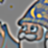 |
Note that both 'sigma' values should be defined and at least one should
be non-zero. A zero value for either sigma component will be the equivalent of
a 'Unity' kernel, meaning that it keeps the
image unchanged. If both values are zero, the two Gaussians would be a
'Unity' kernels, which when substracted
would produce a perfectly zero or black result (plus any bias value).
When the arguments are 'Dog:0,0,non-zero, the DoG, becomes
a simple high pass filter, which is defined as the 'Unity' kernel (producing
the original image) minus a low pass filter kernel (blurred image). In this
case sigma1=0 is just the 'Unity' kernel and sigma2=non-zero is a
Gaussian low pass (blur) filter kernel.
The following, therefore, produces a high pass filtered image with
filter value of sigma2=2
|
DoG:0,2,0' will return an image that is basically
the negated version (around the Output Bias) of the previous image.
This technique can also be used to generate a 3x3 'Isotropic Laplacian'
kernel, meaning a 'Laplacian' kernel which produce equal results in all directions,
rather than having unequal diagonal bias.
For example radius=1 (for a 3x3 kernel) and a sigma of 1 will generate...
|
![[IM Text]](face_laplacian_isotropic.png)
| ||
|
-blur"
operator (which internally uses the 'Blur'
kernels), to generate the same results. However to do this you will need to
generate each of the two 'blurred' images separately, and then subtract the
results, with the addition of an appropriate scaling and bias.
For example...
| 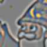 |
4's in the Mathematics Compose argument). This is
because subtracting two normalized blurs, does not produce the same
(increased) magnitude of results that you from normalizing the two subtracted
gaussian curves together in a 'DoG' kernel.
However other than the magnitude, the above example image is equivelent to the
first 'DoG' kernel result, just faster to
generate, especially for larger sigma values. And that is the point, even
though it is more work, that complex method is faster than using a 'DoG' or 'LoG' kernel
directly.
Discrete Laplacian Kernels
Laplacian:{type}
|
LoG' kernel but scaled so as to use discrete integer values in
a small kernel array. This allows you to use generated dedicated fast image
filters that only use integer maths to process the image data. However
ImageMagick is a more generalized image processor and as such does not provide
such an ultra fast dedicated filter. But people like to use these as they are
simpler to understand, so many of them have been built into IM.
None of the kernels provided here are rotatable, and most are 'anisotropic',
meaning they are not perfectly circular, especially in diagonal directions.
However see the previous section ('DoG'
kernels) for a way to generate a true "Isotropic 3x3 Laplacian Kernel".
The first two 'Laplacian:0' and 'Laplacian:1'
kernels are the most common form of "Discrete Laplacian Kernel" in use. They
are very small, meaning they will locate edges very accurately, but are also
prone to enhancing image noise.
Note that not all 'type' numbers have been defined, leaving spaces for
more discrete kernels to be defined in the future. The numbers used were
selected to better match the kernel defined by that number.
Laplacian:0 (default)
The 8 neighbour Laplacian. Probably the most common discrete Laplacian
edge detection kernel.
Here I use Show Kernel to extract the
'discrete' and 'unnormalized' kernel, before showing you thw result of the
normalized kernel with a Output Bias.
| |||
|
LoG' or 'DoG' produces a result that is more complex than is
desired. In such cases, generating an unbiased image, (without any Output Bias) will work better.
So lets repeat the above without a bias, so as to only keep the brigher
'positive' edges.
|
![[IM Output]](face_laplacian_positives.png)
|
| 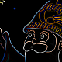 |
Laplacian:1
The 4 neighbour Laplacian. Also very commonly used.
![[IM Text]](face_laplacian_1.png)
Laplacian:2
3x3 Laplacian, with center:4 edge:1 corner:-2
| 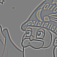 | ||
|
![[IM Text]](kernel_laplacian_2.txt.gif)
Laplacian:3
3x3 Laplacian, with center:4 edge:-2 corner:1
|
![[IM Text]](face_laplacian_3.png)
| ||
|
Laplacian:5
5x5 Laplacian
| 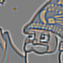 | ||
|
![[IM Text]](kernel_laplacian_5.txt.gif)
Laplacian:7
7x7 Laplacian
|
![[IM Text]](face_laplacian_7.png)
| ||
|
![[IM Text]](kernel_laplacian_7.txt.gif)
Laplacian:15
A Discrete 5x5 LoG (Sigma approximatally 1.4)
| |||
|
![[IM Text]](kernel_laplacian_15.txt.gif)
Laplacian:19
A Discrete 9x9 LoG (Sigma approximatally 1.4)
| 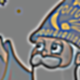 | ||
|
Sharpening Images with Edge Detection (enhancing the edges of the original image)
The 'LoG' and 'DoG' kernels can also be used to sharpen images, as opposed to
Un-sharpening Images using Blurs.
Basically all you need to do is add the kernel results (including negative
results) to the original image.
To do this is easy, simply add 100% weighted 'Unity' or "Identity" kernel to the scaling factors. This is why
it was provided.
For example...
|
![[IM Output]](face_sharpen.png)
|
| This is a much broader smoother sharpening of the image than what the Unsharpen Technique generated (result shown to right). That is because it is an actual true sharpening of the image, and not one faked by the subtraction of a blur. |
For example less sharp...
|
![[IM Output]](face_sharpen_50.png)
|
Or more sharp...
|
Directional Convolutions (Slopes, and Compass)
Like the above, these kernels look for slopes in the color intensity of the image, but rather than any slope, these look for slopes in a specific direction. Mathematically this is known as a 'derivative' which is really just fancy way of saying 'slope'. But knowing slope information for different directions can also be useful as a means from which you can determine the angle or 'compass' direction of the a slope or image edge. That is the 2-dimensional direction of the slope in an image at some particular point. Slopes are also used in image processing techniques known as 'embossing' and 'shading' of images. At this time no 'generated' kernels are available, only 'named' pre-defined kernels, such as Sobel and Roberts. However I am certain that the embossing and shading kernel generation functions will be moved into the morphology/convolution kernel set, at some point in the future. So lets have a look at some of the 'named' directional kernels.Directional Kernels
Sobel
We already saw the 'Sobel' kernel above in the discussion of Zero-Summing Kernels. This kernel is a raw directional (first derivative) kernel designed to return the slope of an edge in some specific orthogonal direction. By default it is designed for left to right slope detection, using a '
Sobel:{angle}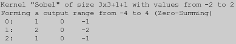
convolve'
operation. The result is essentually a X-derivative (slope) of the image.
|
![[IM Output]](slope_positive.gif)
| If you look at the kernel you may think that it is declared backwards. In one sense you are actually correct. However this is due to the way 'Convolve' actually works. You can find out more about this 'reversal' in more detail in Convolve vs Correlate below. |
50%' is
also used with this convolve operation.
Though there is no negative slope in the previous example, this next example
does have one, so I also added a Bias Setting so you can
see it.
|
![[IM Output]](slope_sobel_bias.gif)
If you use this kernel with 'Correlate', you will find slopes
that 'match' the way the kernel is defined. In that case you would get
a positive results for a slope going from high (white value) on left and
a low (black value) on right. In the able example the two lines would then
be swapped.
However the above is 'Convolution', and not a 'Correlation' (meaning match the kernel) . Again see
Convolve vs Correlate for more detail
of the difference.
|
Sobel' kernel, on the face
image.
Note that sobel, and most other edge detection kernals tend to produce
a 2 pixel thick response along very strong edge, and a 3 pixel response over
a single pixel wide line. This is much stronger than a laplacian edge
detector.
You can rotate this kernel using the 'angle' argument, generally in
multiples of 90 degrees. However you can also rotate it 45 degree multiples,
even though it was not designed for this. This is useful for getting 45 degree
quantized directional derivatives or the gradient magnitude from the maximum
of all 45 degree rotated derivative results.
![[IM Output]](face_sobel.png)
{kind=link}
{kind=link}
{kind=link}
{kind=link}
{kind=link}
{kind=link}
{kind=link}
{kind=link}
{kind=link}
{kind=link}
{kind=link}
{kind=link}
{kind=link}
{kind=link}
{kind=link}
{kind=link}
{kind=link}
{kind=link}
{kind=link}
{kind=link}
{kind=link}
{kind=link}
{kind=link}
{kind=link}
{kind=link}
{kind=link}
{kind=link}
{kind=link}
{kind=link}
Here it is again, but rotated 90 degrees (top to bottom).
| 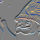 |
{kind=link}
One way to collect all the edges of an image using a '
Sobel' kernel, is to apply the kernel 4 times in all directions,
and collect the maximum value seen (using a Lighten Mathematical Composition. This is an approximation to the
gradient magnitude.
|
![[IM Output]](face_sobel_maximum.png)
|
Sobel' kernel.
|
![[IM Output]](face_sobel_maximum_2.png)
|
|
{kind=link}
| 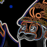 |
{kind=link}
The "-gamma" function
in the above use being used to perform a mathematical 'Square' and 'Square
Root' of the values returned by the 'Sobel' results. For more detail see Power Of Maths Function.
The extra "+level"
ensures the Plus Composition does not
overflow the image quantum range. See Quantum Effects, non-HDRI vs HDRI for details.
|
magick -size 30x600 xc:'#0F0' -colorspace HSB \
gradient: -compose CopyRed -magick composite \
-colorspace RGB -rotate 90 rainbow.jpg
magick shapes.gif -define convolve:scale='50%!' -bias 50% \
\( -clone 0 -morphology Convolve Sobel:0 \) \
\( -clone 0 -morphology Convolve Sobel:90 \) \
-delete 0 \
\( -clone 0,1 -fx '0.5+atan2(v-0.5,0.5-u)/pi/2' rainbow.jpg -clut \) \
\( -clone 0,1 -fx 'u>0.48&&u<0.52&&v>0.48&&v<0.52 ? 0.0 : 1.0' \) \
-delete 0,1 -alpha off -compose CopyOpacity -magick composite \
face_sobel_direction.png
|
![[IM Output]](face_sobel_direction.png)
-fx" expression
is the one that uses a 'atan()' function to magick a X,Y vector into an
angle. This is then colored with the an external Rainbow Gradient Image, as a Color Lookup Table. The second "-fx" expression create a thresholded
transparency mask to make any areas without a slope transparent.
However the above technique tends to produce huge mess of information for real
images as it does not take into account the magnitude of the slope.
Here is another more complex version. This does almost all the calculations
in the green 'G' channel, so as to reduce the amount of image processing
needed by a factor of three. It then uses HSB colorspace to create direction
(hue) and magnitude (brightness).
|
![[IM Output]](face_sobel_magnitude_n_direction.png)
|
Roberts
The '
Roberts:{angle}![[IM Text]](kernel_roberts.txt.gif)
Roberts' kernel is far simplier that the previous 'Sobel' kernel, and will produce an even tighter edge
location (down to 2 pixels). Of course that also makes it more prone to noise
effects.
Normally this kernel is represented by a much smaller 2x1 or even a 2x2
kernel, however by implementing it as a 3x3 kernel I can 'cyclically' rotate
the kernel in 45 degree increments.
For example here is a 45 degree result, more commonly known as
a 'Roberts-Cross' kernel.
|
![[IM Output]](face_roberts.png)
|
Sobel' you can also use Multi-Kernel Handling to generate
a maximum slope from all directions. But this time we will get 8 x 45 degree
directions, rather than just 4.
|
![[IM Output]](face_roberts_maximum.png)
|
Sobel'.
Basically the slope generated by just one 'Roberts' convolution, is offset by half a pixel from aligning with
the actual image. That is the slope calculated is located for a point between
the '+1' and '-1' values, between the pixels, but
stored in the center '-1' pixel.
However this also means that by saving all the slopes around a pixel and
adding them together, you get a much smaller sharper edge detection with only
2 pixels (rather than 4 pixels) highlighting sharp edge boundaries.
Prewitt
Prewitt:{angle}![[IM Text]](kernel_prewitt.txt.gif)
The 'Prewitt' kernel is very similar to a 'Sobel', though much looser on the exact direction of the
specific edge detection. The result is thus a little more fuzzy.
|
![[IM Output]](face_prewitt.png)
|
Compass
Compass:{angle}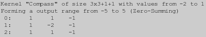
This is the 'Prewitt Compass' kernel which supposedly a stronger directional
sense than 'Sobel'.
|
![[IM Output]](face_compass.png)
|
Kirsch
Kirsch:{angle}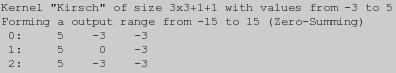
This is another strong direction sensing edge detector.
|
![[IM Output]](face_kirsch.png)
|
Frei-Chen
Three sets of kernels are provided by this built-in. The first is a 'Isotropic' (uniform direction) variant of 'Sobel', where the '2' values have been
replaced by a Square Root of 2.
Frei-Chen:[{type},][{angle}]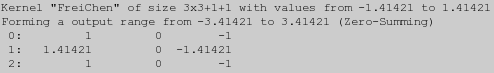
The kernel above is the default unweighted kernel that is the heart of the
'Frei-Chen' kernel.
|
![[IM Output]](face_freichen.png)
|
Sobel', this kernel should be applied
using an angle in multiples of 90 degrees.
To make things easier two kernels (with the same weighting) have been
provided, one like the above for orthogonal use, the other for diagonal use.
The third set of types consists of 9 specially designed and weighted kernels that is used not only for edge detection in a specific direction, but also for determining the actual angle of a sharp edge. The 'type' in this can is a number from '
Frei-Chen:1 ![[IM Text]](kernel_freichen1.txt.gif)
Frei-Chen:2 ![[IM Text]](kernel_freichen2.txt.gif)
11' to
'19', allowing you to extract any one of the 9 kernels in the set.
However if you give a 'type' value of '10' you will get
a multi-kernel list of all 9, pre-weighted kernels.
The kernels are each applied to the original image, then the results are added together to generate the edge detection result. This is best done using a HDRI version of ImageMagick. magick image.png \ \( -clone 0 -morphology Convolve FreiChen:11 \) \ \( -clone 0 -morphology Convolve FreiChen:12 \) \ \( -clone 0 -morphology Convolve FreiChen:13 \) \ \( -clone 0 -morphology Convolve FreiChen:14 \) \ \( -clone 0 -morphology Convolve FreiChen:15 \) \ \( -clone 0 -morphology Convolve FreiChen:16 \) \ \( -clone 0 -morphology Convolve FreiChen:17 \) \ \( -clone 0 -morphology Convolve FreiChen:18 \) \ \( -clone 0 -morphology Convolve FreiChen:19 \) \ -delete 0 -background Black -compose Plus -flatten \ result.pfm If a type of 10 is given then a multi-kernel list of all the 9 weighted kernels shown above is generated. This lets you use multi-kernel composition to do the above, much more simply... magick image.png -define morphology:compose=Plus \ -morphology Convolve FreiChen:10 \ result.pfm I have not however found out what the supposed meaning of the results are. If anyone has any experience or knowledge about how this is actually used, please let me know, so I can include it here for others to use.
Correlate
(
 )
)
Where the 'Convolve' method is basically
used for image processing, the 'Correlate' method is designed
more for pattern matching. That is, it performs a 'Cross-Correlation' of an
image with its kernel, looking for a match of the given shape within the
image.
In reality both 'Convolve' and
'Correlate' are the same operation. The only difference between
them is actually very minor, namely, an x and y reflection (equivalent to
a 180 degree rotation) of the kernel.
The best guide I have found on the how correlation and convolution work and
how they differ to each other is Class Notes for
CMSC 426, Fall 2005, by David Jacobs.
Convolution vs Correlation (asymmetrical kernel effects)
As I mentioned above the two operators 'Convolve' and 'Correlate'
are essentially the same. In fact users often say convolution, when what they
really mean is a correlation. Also correlation is actually the simpler method
to understand.
For kernels which are symmetrical around a central 'origin', which is very
typically the case, the two methods are actually the same. The difference
only becomes apparent when you are using an asymmetrical or uneven kernel.
For example, here I use a 'L' shaped 'flat' kernel against our 'single pixel'
image.
|
![[IM Output]](kernel_lshape.gif)
![[IM Output]](convolve_shape.gif)
Convolve' expanded the
single pixel in the center to form the 'L' shape around it. Even when the
origin itself was not part of the 'neighbourhood'.
Now lets repeat this example but using 'Correlate' instead.
As you can see '{kind=link}
Correlate' also
expanded the single pixel, to form a 'L' shape but it was a 'rotated' 'L'
shape.
This is essentially the only difference between these two methods. The
'Correlate' method applies the kernel
'AS IS' which results in the single pixel expanding into a 'rotated' form.
On the other hand 'Convolve' actually
uses an 180 degree 'rotated' form of the kernel so that each pixel gets
expanded into the same non-rotated shape.
If you like to see some great examples of how 'Convolve' actually does work, I recommend you also have a look at
EECE \ CS 253 Image Processing, Lecture 7, Spatial Convolution. The
diagram on page 22, where it actually applies the 'reflected' kernel to
a single pixel, just as I did above.
This rotation difference may not seem like much, but it means that in terms of the mathematics, a convolve operation (represented by an asterix ('
*') symbol) is Commutative in that if
both kernel and image were treated as just an array of values (or two images),
then F * G == G * F. It also means convolve is Associtive in that
( F * G ) * H == F * ( G * H ). See Convolution
Properties, Wikipedia for more information on this.
The 'Correlate' operation is neither
Commutative or Associtive. Even though
it is closely related (by rotation of the kernel). Basically 'Convolve' acts more like a mathematical
'multiply', while 'Correlate' does not.
The exception to all this fuss, is when the kernel being used is, identical
when rotated 180 degrees. That is the kernel is symetrical about the 'origin'.
In that special case both operations generate equivelent results.
What confuses people, is that most of the kernels that are use for
convolution, such as Gaussian Blurs, Laplacian, and so on are symetrical,
in which case it does not really matter whether you are in fact doing a
convolution, or a correlation. So people get relaxed and fuzzy on the
meanings.
It is only when they are not symetrical, as in the case of Shape Searching (see next), or with directional
kernels such as Sobel, that the difference really
becomes important.
Correlation and Shape Searching
The real use of the 'Correlate' method, (applying the kernel
neighbourhood 'as is' without rotation), is an old, but simple method of
locating shaped objects that roughly match the shape found in the provided
kernel.
For example if we were to use 'Correlate' with an 'L' shaped
kernel and attempt to search the image that we created with the convolution
method example above, we get...
|
![[IM Output]](correlate.gif)
| ASIDE: note that the 'black' areas in the above kernel image, represent a value of zero. Their are no negative values in this kernel, only positive values for the shape being matched. |
Correlate' method
produced a maximum brightness at the point where the kernel 'origin' exactly
matches the same shape in the image. But it also produces less bright results
where you only get a partial match of the shape. The more of the shape that
matched, the brighter the pixel becomes.
I would warn you however that while 'Correlate' succeeded in this case, it is not really a great way of
doing so. For example, it can generate a very large number of false matches in
areas of very high brightness.
This problem can be mitigated by using negative values for areas that should
match the dark background of the image instead. That is, areas that do not
match the background should make the resulting pixel less bright.
|
{kind=link}
![[IM Output]](correlate_pattern.gif)
| ASIDE: To make the kernel image clearer, I generated the kernel image so that positive (foreground) values are white, negative (background) values are black and the zero (don't care) values are transparent. However the kernel that is actually used, is completely defined, in terms of numbers, and its 'neighbourhood' is a full rectangle. |
^' in the above.
This is important as it will normalize the positive and negative values in the
kernel separately. That is you want to search for foreground pixels equally
with the background pixels.
This means that you can search for both positive and negative matches of the
given shape by using an HDRI version of
IM or with the appropriate use of Output Bias (see
above).
For example, here I apply the 'L' shape search to a test image containing
both positive and negative 'L' shapes. (images shown have been magnified)
|
![[IM Output]](test_mag.gif)
![[IM Output]](correlate_bias.gif)
50%' scaling factor,
so that the no-match pixels are black, and perfect matches are white.
Once you have a 'Correlate' matching
image, you need to try to find the matching 'peaks'. This can be done using
another Correlation, but does not always work very
well.
The better method is to use the more exact pattern matching method, 'HitAndMiss' morphology, with the
special 'Peaks' which was
created for this purpose. This finds any single pixel that is only surrounded
by darker colored pixels. Other 'Peaks' kernels can be used to find 'looser' matches.
magick correlate_bias.gif -morphology hitandmiss peaks:1.9 \
-auto-level correlate_peaks.gif
|
{kind=link}
{kind=link}
maxima".
FUTURE: Normalized Cross Correlation with the Fast Fourier Transform, for
generating very fast image Correlations with very large images (both source
image and sub-image).
Correlation vs HitAnd Miss Morphology
If you magick compare the kernel image as I represented it to kernels that are used by the Hit-And-Miss Morphology Method, you will find they actually represent the same thing.'HitAndMiss'
| 'Correlate'
| |
|---|---|---|
| Foreground |
A value of '1.0'
|
A value of '1.0' (before normalization)
|
| Don't Care |
A value of 'Nan' or '0.5'
|
A value of 'Nan' or '0.0'
|
| Background |
A value of '0.0'
|
A value of '-1.0' (before normalization)
|
| Results | Subtracts the minimum of the foreground from the maximum of background. Only exact matches will thus produce positive results and thresholding will produce a binary matching image. | Generates a range of how closely the image matches a shape. It is possible for some background pixels to be larger in value than foreground pixels as long as the overall pattern is present. Can be difficult to locate specific 'matching' peaks. You can also find negative matches. |
Hit-And-Miss'
will only find perfect exact matches with a definite foreground to background
difference. As such, it is much less forgiving of noise and near misses than
'Correlate'.
On the other hand 'Correlate' can be
performed using linear image processing and more specifically using a Fast Fourier Transform. This can make pattern
matching with larger patterns and kernels a lot faster, especially when
multiple patterns are involved, saving you the cost of transforming images and
patterns into the frequency domain. It also works with actual images, though
some pre-processing and the use of HDRI may
also be necessary.
Which you use is really up to you, and what results you are after. Perfect
matches only, or near matches with lots more errors, and the possible use of
a faster algorithm.
Note that for finding exact matches of small color images within larger
images, the Sub-Image Locating Feature of
the "compare" program will provide a much better method than
either 'Hit-And-Miss' or
'Correlate' methods. This is because it
uses a 'least squares of color vector differences' to do the sub-image
matching, which can produce a better metric for match results. However it is
just as slow, especially for large images.
Neighbour Counting
One of the more unusual things convolution can be put to is known as neighbour counting. That is figuring out how many pixels exist in a particular area surrounding each pixel point in an image.Counting Neighbours
Basically by using a very simple convolution kernel you can create an image that contains a count of the number of neighbours surrounding a particular point in a binary image. By convolving with a Ring Kernel of the size '1.5' you get a neighbour count.
Here is a count the neighbours of each pixel in a small area, and show the
enlargement of individual pixels before and after (generated using the Enlarge Image Script)...
As you can see all the pixels grey-level show how many neighbours they have,
including any Virtual Pixel neighbours along
the edges.
If you want to include the current pixel in the count, you can use a Square Kernel instead.
With appropriate conversions (including level adjustments) and using the PbmPlus File Format, you can magick the above
grey levels, into actual numbers if that is what you want.
{kind=link}
|
| 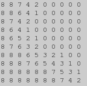 |
magick area.gif -define convolve:scale=-1\! \
-morphology Convolve Laplacian:0 -clamp neigh_edge.gif
|
![[IM Output]](area_enlarged.png)
![[IM Output]](neigh_edge_enlarged.png)
The Game of Life
In 1970 a British mathematician, John Horton Conway, publish in Scientific American, a special simulation which became very popular. It is now known as Conway's Game of Life. It was based on a grid of points where each point was either 'alive', or 'dead'. What 'cells' were then classed as being 'alive' or 'dead' in the next 'generation' depended of a set of very simple rules purely based on the number living neighbouring cells around them.- The neighbourhood is the 8 pixels surrounding each 'cell'.
- A 'live' cell continues to live if it has 2 or 3 neighbours.
- A 'dead' cell becomes 'live' (born) if it has exactly 3 neighbours.
- Otherwise the cell becomes or remains 'dead'.
The result of this will be a count of the 8 neighbours around each pixel (is 'white'), plus a value of 10 if the central pixel is 'live' or 'white'. As such the value of this kernel will be either '
'3: 1, 1, 1 1, 10, 1 1, 1, 1'
0' to
'8' for dead pixels or '10' to '18' for
live pixels.
If we scale this kernel by a value of 20 (actually scaling by
'0.05' to generate a gradient, see below), you will generate an
image with 21 posible grey-levels. That is you will get a 'black' for a value
for the '0' grey-level and a white value for the
'21' grey-level, not that the kernel can actually generate such
a value.
Now we can encode the 'Game of Life' rules into an Color Lookup Table Image, so as to magick the
resulting neighbour count 'grey-level', generated by the above kernel, into
the appropriate 'life and death' result according to the 'Life Rules'.
magick -size 21x1 xc:black -fill white \
-draw 'point 3,0 point 12,0 point 13,0' \
life_clut.gif
enlarge_image -25.3 -ml 'Life Rules' life_clut.gif life_clut_enlarged.png
|
{kind=link}
magick -size 15x15 xc:black -fill white \
-draw 'line 3,2 3,4 line 10,10 12,10 point 10,11 point 11,12' \
life_gen_000.gif
magick life_gen_000.gif -define convolve:scale=0.05 \
-morphology Convolve '3:1,1,1 1,10,1 1,1,1' \
life_clut.gif -interpolate integer -clut \
life_gen_001.gif
magick life_gen_001.gif -define convolve:scale=0.05 \
-morphology Convolve '3:1,1,1 1,10,1 1,1,1' \
life_clut.gif -interpolate integer -clut \
life_gen_002.gif
magick life_gen_002.gif -define convolve:scale=0.05 \
-morphology Convolve '3:1,1,1 1,10,1 1,1,1' \
life_clut.gif -interpolate integer -clut \
life_gen_003.gif
magick life_gen_003.gif -define convolve:scale=0.05 \
-morphology Convolve '3:1,1,1 1,10,1 1,1,1' \
life_clut.gif -interpolate integer -clut \
life_gen_004.gif
|
![[IM Output]](life_gen_000.gif)
![[IM Output]](life_gen_001.gif)
![[IM Output]](life_gen_002.gif)
![[IM Output]](life_gen_003.gif)
![[IM Output]](life_gen_004.gif)
|
![[IM Output]](life_pattern.gif)
{kind=link}
This is just one example of whole range of 'Cellular Automata' that IM could process. Of course their are many faster dedicated programs for 'Life' and 'Cellular Automata', which generally do exactly the same thing, but I wanted to show that IM is flexiable enough to do it as well. As the results are simple binary images, you can also use IM's Morphology methods such as Hit and Miss Pattern Searching or Cross-Correlation to search for specific life patterns, making using IM for life reseach more practical, if slow.